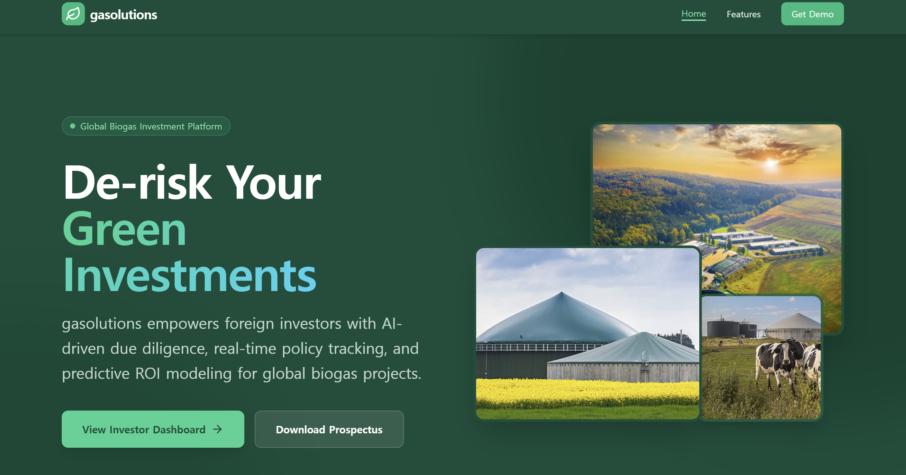
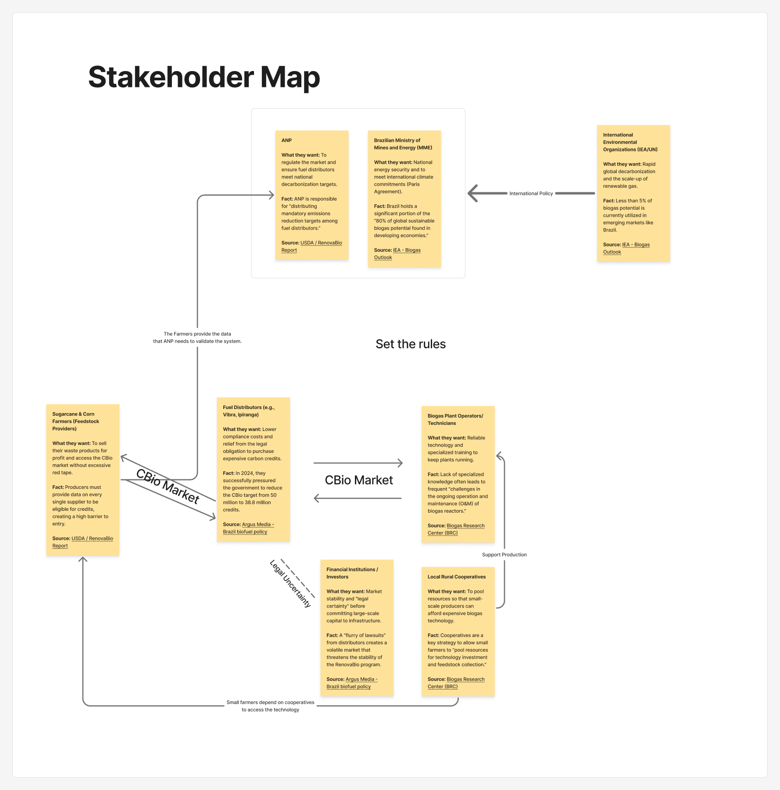
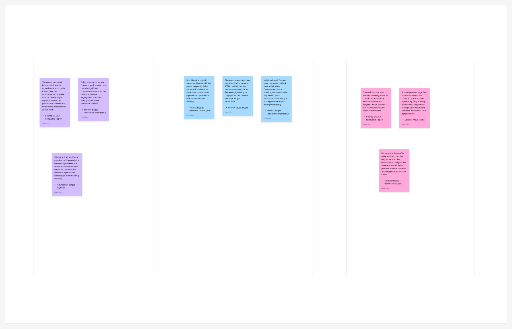
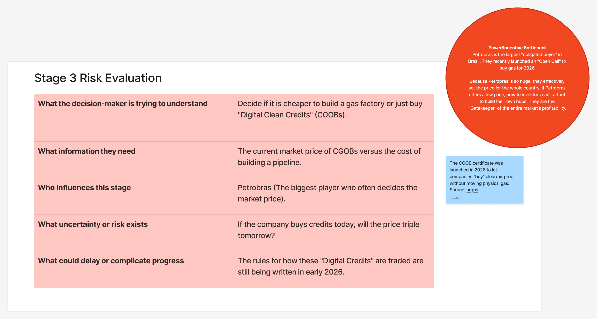
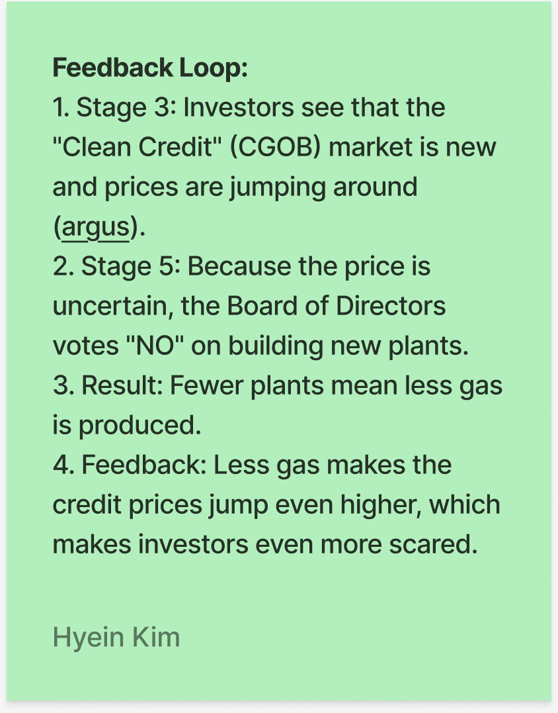
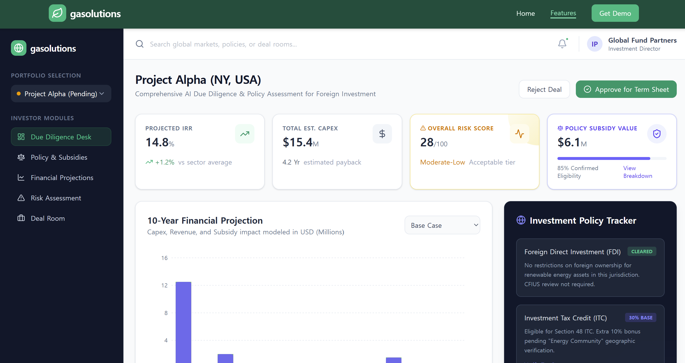
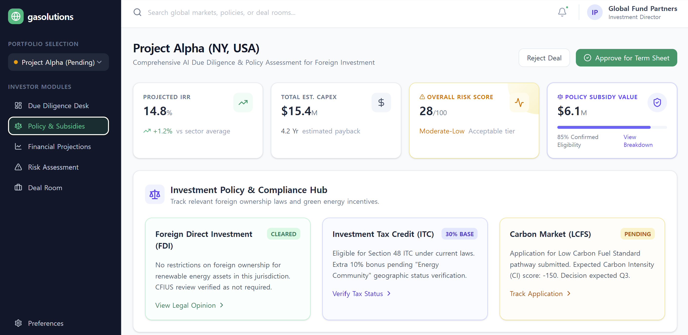
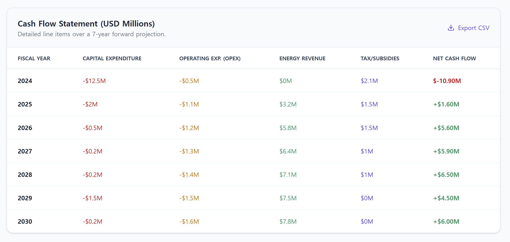
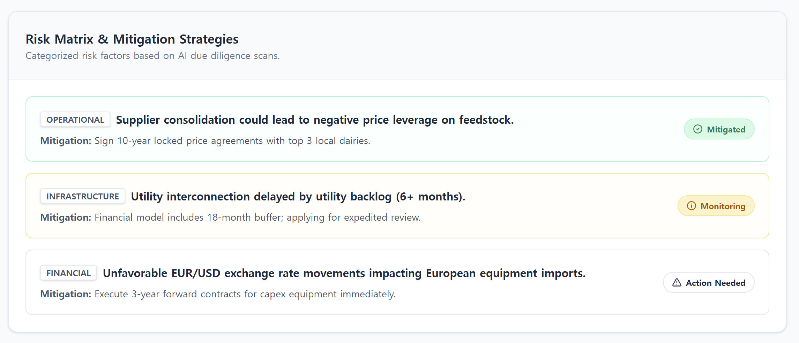
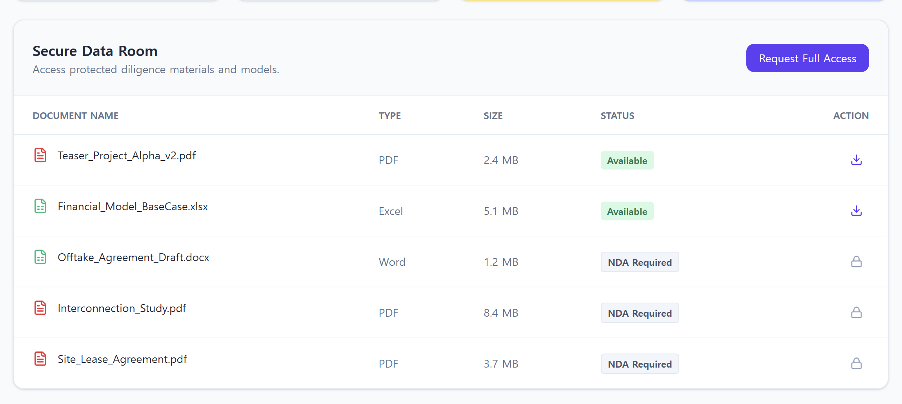

Finding 01
Potential was not the problem.
The IEA and related sources showed that Brazil sits inside a huge share of the global sustainable biogas opportunity, yet only a small fraction is actually used.
Design archive / agile product design / systems thinking
An agile product design concept shaped through systems research, iterative reframing, and one core question: how can a product make complex biogas decisions easier to interpret and act on?
This project became strongest when I stopped thinking about it as a broad sustainability dashboard and started treating it as a decision-support tool. Each assignment narrowed the frame through research, stakeholder mapping, journey thinking, risk analysis, and product refinement until the concept felt grounded in how the system actually behaves.

This project started with a system, not a screen. I began by studying Brazilian biogas as an ecosystem: who shapes it, who depends on it, where decisions bottleneck, and why outcomes stay unstable even when the long-term opportunity looks strong.
What I think this project shows best is how I narrow ambiguity. The agile structure moved from source-based research to stakeholder mapping, decision journeys, and product framing. Instead of jumping straight into interface ideas, I used each step to define a sharper user, a sharper decision, and a more defensible reason for the product to exist.
I started with policy, industry, and academic sources and translated each one into a fact, a stakeholder, and a tension. That made the research actionable instead of descriptive. The goal was not to prove that biogas mattered. It was to understand why such a promising sector still stalls in practice.
Three patterns repeated across the board. First, the sector has huge potential but very low actual utilization. Second, certification and compliance rules create real access barriers, especially for smaller producers. Third, technical and infrastructure gaps make the market fragile even when policy ambition is high.
Evidence
Finding 01
The IEA and related sources showed that Brazil sits inside a huge share of the global sustainable biogas opportunity, yet only a small fraction is actually used.
Finding 02
RenovaBio and CBio participation depend on proving supplier-level sustainability data. For smaller producers, that paperwork burden is not administrative noise. It can block entry entirely.
Finding 03
The Biogas Research Center sources repeatedly pointed to operations and maintenance as a weak point. Even when equipment exists, specialized knowledge does not always reach the field.
Finding 04
Lawsuits from fuel distributors and target adjustments showed that the carbon-credit layer is not stable background context. It actively reshapes investment confidence.
Synthesis
Cluster 01
Actors often want the same outcome, but the system asks them to participate through tools, rules, and behaviors that do not actually fit their operating reality.
Cluster 02
Feedstock, infrastructure, financing, and technical support do not move at the same speed. That timing gap makes otherwise promising opportunities hard to execute.
Cluster 03
Critical decisions sit with a relatively small set of regulators, major buyers, and institutions, while much of the practical burden sits elsewhere.
Shift
By the end of this stage, I was no longer looking for a broad "biogas platform." I was looking for a way to make system-level uncertainty easier to read for someone who has to act on it.

The stakeholder map helped me see that the system was not only technical. It was governed by a chain of dependence: regulators set the rules, farmers and cooperatives provide the feedstock, operators keep plants working, and investors only move when the market feels credible.
That made the design problem sharper. A useful product here would need to clarify relationships, not just display data.

The next shift was choosing one decision-maker instead of staying at ecosystem scale. I mapped the journey of an energy firm strategist at a major Brazilian fuel company who needs to decide whether to build a proprietary biomethane hub or buy clean-gas certificates to satisfy the 2026 mandate.
That decision lens made the system much more concrete. The key tension was not "is biogas valuable?" It was "how do you act when the policy target is moving, infrastructure is uneven, certification is burdensome, and the market signal itself may change before the investment pays back?"

The strongest moment in the journey map was the buy-versus-build stage. The strategist needs to compare certificate prices, pipeline costs, and market timing while knowing that Petrobras can effectively act as a pricing gatekeeper.
That told me the product should not behave like a generic knowledge base. It needed to help a user weigh tradeoffs, surface dependencies, and understand how one market signal changes the rest of the decision.

I also mapped the feedback loop behind the hesitation: volatile certificate prices make investors nervous, nervous investors delay new plants, lower production keeps supply tight, and that drives prices even higher.
This was an important design insight for me. The system was not failing because people lacked ambition. It was failing because uncertainty compounds. That is exactly the kind of pattern a product can help make legible.
Once the research and journey map were in place, the next task was to translate them into a product opportunity. The key move was narrowing the audience. Rather than designing "for the entire biogas ecosystem," I focused on the people who need to interpret scattered policy, market, and infrastructure signals before making a high-stakes investment decision.
Through empathy mapping, SWOT analysis, decision-tension sketches, and product-risk reviews, the opportunity became much clearer: the value was not in predicting the future perfectly. It was in making system conditions understandable enough that a strategist or investor could compare options, spot bottlenecks, and move with more confidence.
That is where Gasolution emerged. I framed it as a decision-support concept that pulls together fragmented signals around infrastructure readiness, credit logic, and market risk into one place, so the product helps users judge whether an opportunity is viable before capital is committed.
What made this project feel genuinely agile was the structure of the iteration. The concept did not appear all at once. It sharpened through weekly cycles of research, journey mapping, opportunity framing, competitor analysis, feature prioritization, and AI/system risk reviews.
That process taught me that agile product design is not about jumping faster to screens. It is about building conviction in layers: define the decision, test the framing, understand where the idea could fail, and then let the interface reflect that logic.
The AI and systems pass made that even stronger. Instead of treating intelligence as decoration, I had to think about what data an assistive layer would rely on, who would trust it, what happens when it is wrong, and how the product should expose source visibility and fallback paths rather than pretend to be certain.
Once the product direction was defined, I wanted the interface to feel like a decision environment, not a generic green-tech landing page. The final screens center investor confidence: clear framing, visible value, and a visual language that makes the biogas market feel concrete instead of abstract.

Product showcase 01
The investor dashboard brings projected returns, capex, policy value, and module navigation into one decision view instead of scattering them across reports.

Product showcase 02
The policy and subsidy module turns regulation into an actionable screen, so investors can see compliance status, incentive eligibility, and legal readiness in context.

Product showcase 03
The financial projection view translates long-term system assumptions into a readable cash-flow model that supports investment judgment.

Product showcase 04
The risk module translates systems uncertainty into a clearer mitigation view, helping users judge what is operationally fragile before capital is committed.

Product showcase 05
The deal room supports diligence by showing which files are immediately available, which require permission, and where access control affects progress.
Choosing a specific user and a specific buy-versus-build decision kept the product grounded and prevented the concept from becoming too broad.
The concept became stronger once it focused on explaining pricing pressure, infrastructure gaps, and compliance bottlenecks rather than simply showcasing industry facts.
Source visibility, safeguards, and resilience mattered because the product lives inside a contested system. The interface needs to support judgment, not replace it.
This project strengthened how I think about systems-aware design. The most important shift for me was learning to treat ambiguity as material instead of something to rush past. The strongest work happened when I stayed with the tensions long enough to understand what kind of product could actually help.
I think this project is a good example of how I work: I like moving from messy systems into clearer decisions, using research to define what matters, and letting the product concept emerge from the structure of the problem rather than from assumptions about what the interface should be.